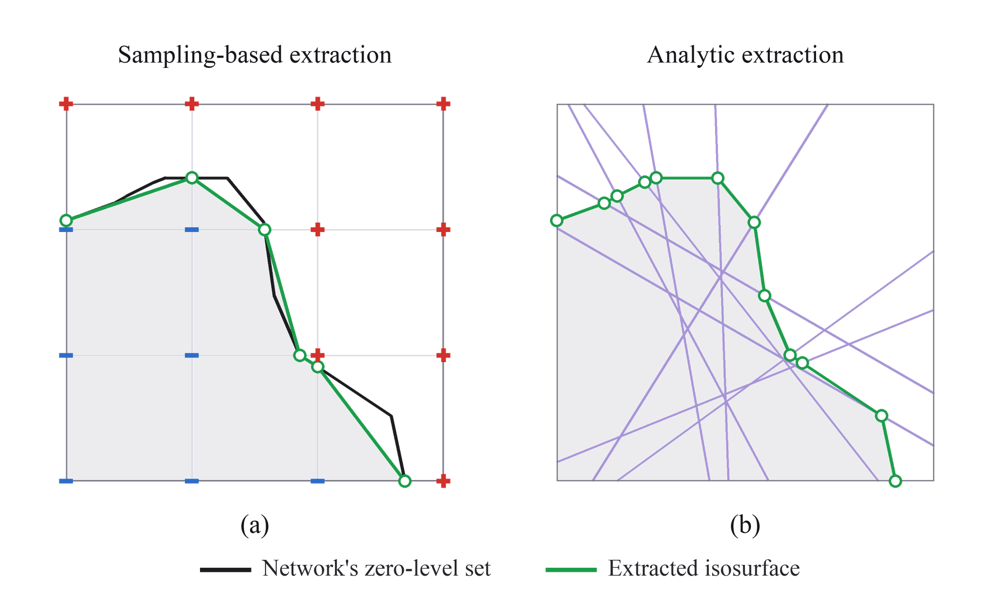
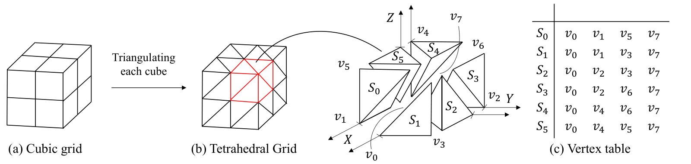
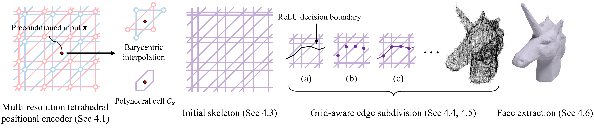
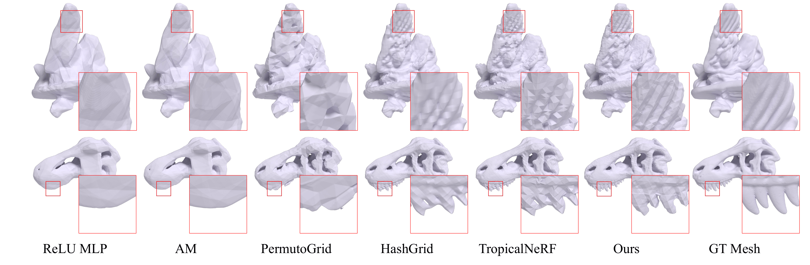
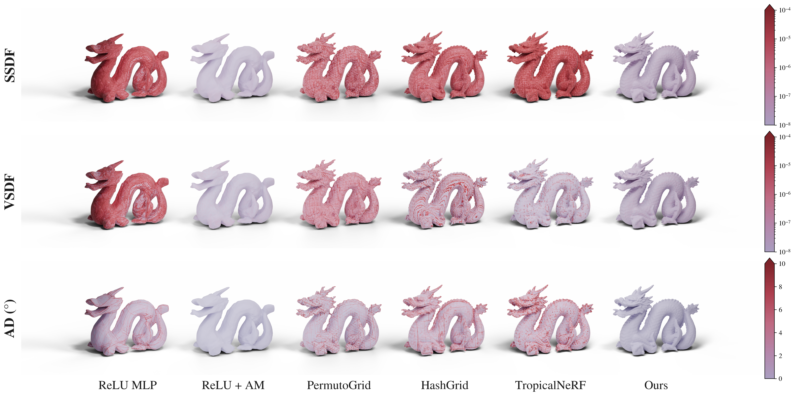
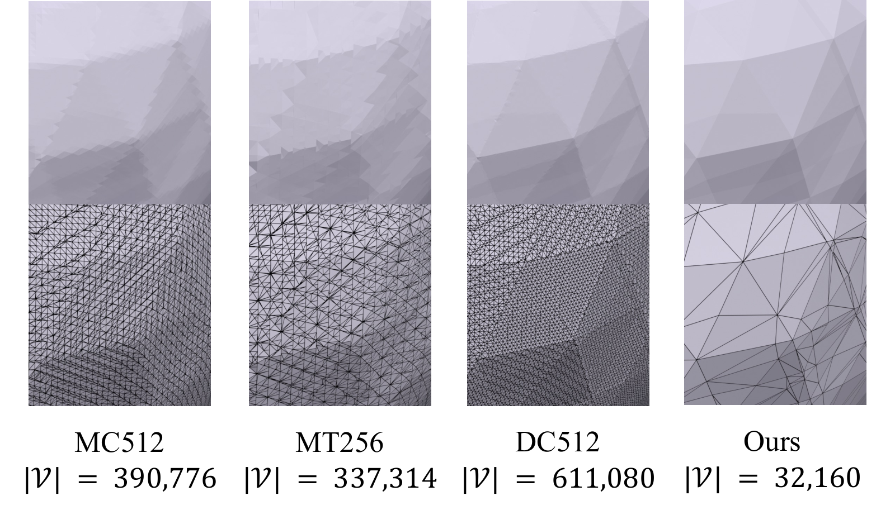

Extracting an explicit surface that exactly matches the zero-level set of a neural signed distance function (SDF) remains challenging. Sampling-based isosurfacing methods such as Marching Cubes introduce discretization error. In contrast, continuous piecewise affine (CPWA) analytic approaches typically require plain ReLU MLPs, which limits the ability to learn high-frequency SDFs in practice. We present TetraSDF, an analytic isosurface extraction framework for SDFs that retains the expressiveness of grid-based encoders while enabling exact zero-level set extraction, by representing the SDF with a ReLU MLP composed with a multi-resolution tetrahedral positional encoder. Our positional encoder's barycentric interpolation preserves a global CPWA structure, allowing us to track ReLU linear regions within an encoder-induced polyhedral complex. We further introduce a fixed analytic input preconditioner derived from the encoder’s metric to reduce directional bias, thereby stabilizing training. Across multiple benchmarks, TetraSDF matches or surpasses existing grid-based encoders in SDF reconstruction accuracy, while faithfully recovering the network’s zero-level set as a triangle mesh.
For a continuous piecewise affine (CPWA) network, the SDF is affine within each linear region, so its zero-level set bends only at region boundaries. Tracking these regions lets us place a vertex at every boundary crossing and recover the surface exactly. Sampling-based methods such as Marching Cubes instead rely on finite samples at fixed grid points to query the field, so the extracted mesh can drift from the trained network's zero-level set.

TetraSDF represents an SDF with a ReLU MLP composed with a multi-resolution tetrahedral positional encoder, keeping the overall mapping continuous piecewise affine (CPWA) so that its zero-level set can be extracted exactly as a triangle mesh.



Self-consistency measures how closely the extracted mesh agrees with the trained network's own zero-level set. We report it with three metrics: SSDF (Surface-sampled SDF), the mean absolute SDF the network predicts at points sampled on the mesh surface; VSDF (Vertex-sampled SDF), the same quantity evaluated at the mesh vertices; and AD (Angular Difference), the mean angle between the mesh normals and the network-derived normals. For all three, zero means the mesh lies exactly on the network's zero-level set. For ReLU MLP, PermutoGrid, and HashGrid we use MC512, while AM and TropicalNeRF use analytic extraction.


@inproceedings{oh2026tetrasdf,
author = {Oh, Seonghun and Uh, Youngjung and Kim, Jin-Hwa},
title = {TetraSDF: Analytic Isosurface Extraction with Multi-resolution Tetrahedral Grid},
booktitle = {Proceedings of the 19th European Conference on Computer Vision (ECCV)},
year = {2026}
}